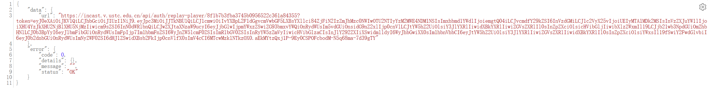

课程回看临时解决方案，仅作期末复习用途，下载的视频请勿外传
另解：参考Github仓库
TMYTiMidlY/capture-courses
，使用浏览器开发者工具做本地覆写，然后即可正常访问原网站（支持往期课程！）
更新：1月2日，教务处将平台部分课程设置为对本班同学开放，持续到本学期结束，大部分本班课程现已可以直接在视频平台
直录播-我的录播课
观看回放
课程名或课程ID：
搜索
需要先在
v.ustc.edu.cn
登录，选择课程后访问json中的url即可

宣传一下我的Github账号（欢迎Follow）
和将在明年暑假上线的大物实验报告编辑器（开源，全新Flutter框架，23年10月参加余庆杯获银奖）